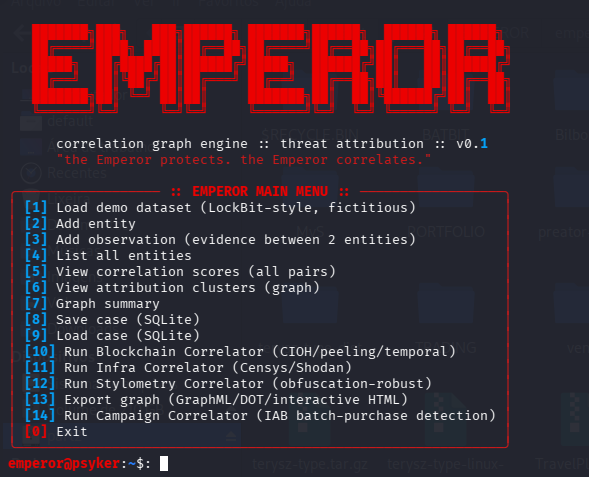
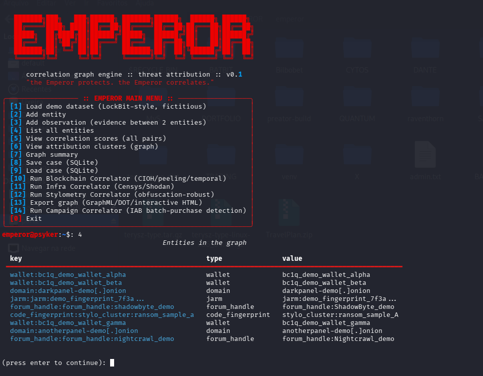
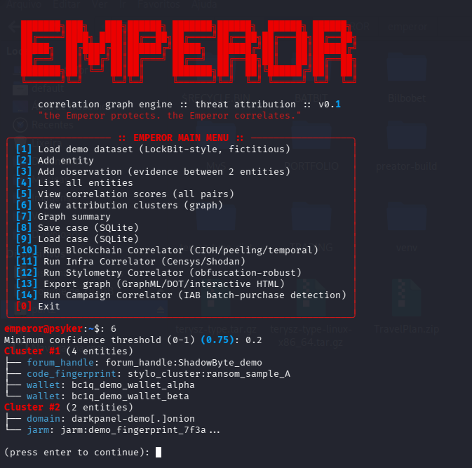

EMPEROR
"The Emperor protects. The Emperor correlates."
Motor de correlação forense para investigações de atribuição de ameaças — funde forense de blockchain, correlação de infraestrutura e estilometria de código num único grafo de correlação, com pontuação de confiança bayesiana.
Por que isso é diferente
Ferramentas comerciais (Chainalysis Reactor, DomainTools Iris, Recorded Future) cobrem bem UMA camada de evidência cada. Nenhuma funde blockchain + infraestrutura + estilometria de código num único grafo com pontuação probabilística explícita.
Chainalysis Reactor
Forense de blockchain — forte em heurísticas on-chain, mas não correlaciona com infraestrutura ou estilo de código.
DomainTools Iris
Correlação de infraestrutura — forte em WHOIS/DNS/certificados, mas isolado de evidência financeira ou de código.
EMPEROR
A camada de correlação que falta entre eles — funde as três camadas num grafo único, com peso probabilístico explícito por observação.
log(LR)),
com um prior conservador (1:1000 por padrão) pra evitar
superestimar atribuição a partir de evidência limitada. O resultado é uma probabilidade
posterior — nunca um "match" binário.
O shell em ação
CLI ASCII interativa — sem servidor, sem dependência de nuvem. Roda inteiramente na sua máquina.



Estrutura do projeto
Correlators — o que cada um faz
Cada módulo é testado contra o dataset real do vazamento do LockBit, não só dados sintéticos — incluindo os resultados nulos.
Blockchain Correlator
100% offline sobre transações já coletadas. Heurísticas: CIOH (inputs co-gastos = mesma wallet, evidência FORTE), detecção de peeling chain, clustering temporal de saque (MODERADA).
Infra Correlator
Integração Censys/Shodan com suas próprias credenciais (nunca hardcoded). Detecta reuso de certificado TLS (FORTE) e reuso de ASN (peso reduzido automaticamente para provedores de nuvem grandes).
Stylometry Correlator
O verdadeiro diferencial de pesquisa. Cada categoria de feature tem um tier (frágil/moderado/robusto/assinatura) conforme sobrevive a packing/ofuscação — metadados de toolchain pesam ordens de magnitude mais que n-gramas de opcode de payload.
Campaign Correlator (detecção de IAB)
Detecta padrões de compra em lote de Initial Access Broker a partir de metadados de build de painel RaaS — motivado pelo caso real do "n046" (umarbishop47, 22+ vítimas latino-americanas). A correlação genuinamente nova é cross-afiliado.
Geo Enrichment
Substitui o palpite fraco por TLD por resolução DNS real + geolocalização IP offline (GeoLite2). Construído depois que testes contra o vazamento real do LockBit expuseram um modo de falha concreto do palpite por TLD.
Text Stylometry (Burrows' Delta)
Construído depois que similaridade de cosseno ingênua produziu um resultado degenerado (~1.000 pra qualquer par) em texto de chat real. Delta de Burrows (2002) usa z-scores em vez de cosseno bruto.
Roadmap
Instalar e colaborar
MIT license — clona, roda local, manda PR. Toda ingestão de dados deve vir exclusivamente de fontes públicas (o campo source_notes existe pra preservar rastreabilidade — nunca remova ao adaptar pra dados reais).
git clone https://github.com/XenomorphSk/EMPEROR.git
cd EMPEROR
# instala dependências
pip install -r requirements.txt
# roda o shell interativo
python3 cli/menu.py
Se o EMPEROR for útil pra você, doações em Monero ajudam a financiar a continuidade (validação com corpus real, estudos de calibração maiores):
Mais uma dimensão no mapa
EMPEROR nasceu do mesmo instinto que o Case Files HUNTING — inteligência de ameaças com disciplina metodológica. Contribuições, issues e PRs são bem-vindos.